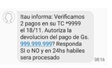
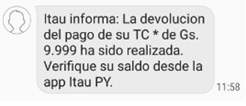

Un pago duplicado sucede cuando un cliente teniendo activa la opción de débito automático del pago mínimo o total de su Tarjeta de Crédito (TC), realiza un pago adicional el día del vencimiento o el día anterior fuera del horario de corte. Esto genera una doble transacción.
📢 Para solucionarlo, nuestro equipo de Servicing Digital contacta al cliente vía SMS para solicitar su aprobación y proceder con la reversión.
🔄 ¿Cómo funciona el proceso?
📩 1. Cliente recibe un SMS.
El mensaje llega desde el #247 a partir de las 8:50 hs.
Se le solicita responder "SI" para aprobar la reversión o "NO" para rechazarla.

📤 2. Cliente responde al SMS
Si responde "SI", la devolución se procesa en los horarios de corte: 11:00 hs y 16:00 hs. Si responde después de esos horarios, la reversión se gestiona el siguiente día hábil.
Si responde "NO" o no responde en 48 horas, no se realizará la reversión.
✅ 3. Confirmación de la reversión
Una vez procesada la reversión y confirmada por Gestión Transaccional, el cliente recibe un segundo SMS notificando la devolución.

💬 ¿Qué hacer si el cliente se comunica al SAC?
Si recibió el SMS y puede responder: Explicarle que la reversión se hará según los horarios de corte establecidos.
Si recibió el SMS pero no puede responder: Verificar qué error le aparece y registrar el caso en BPM.
Si no recibió el SMS: Cargar SIGER y luego la solicitud de devolución en BPM.